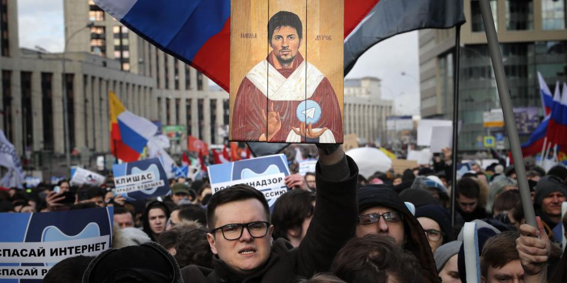

Multitudinarias manifestaciones del domingo llevaron al Gobierno a pronunciarse.

El Kremlin en Rusia salió a declarar que las autoridades rusas no tienen intención de restringir las libertades de los usuarios de internet en su territorio en respuesta a una multitudinaria marcha que tuvo lugar el fin de semana pasado.
"Todos están a favor de la libertad en internet, los autores de la ley, la administración presidencial, el Gobierno, nadie es partidario de restringirla y limitar las posibilidades de trabajo en la red global", dijo a la prensa el portavoz de la presidencia rusa, Dmitri Peskov.
La reacción de Peskov llega tras manifestaciones que reunieron entre 6.500 y 15.000 personas y que protestaban contra los planes de los diputados rusos de aprobar una ley sobre la desconexión de su país de la red global de internet en caso de amenazas externas a su seguridad nacional.
"Esta mañana vi por televisión como uno de los participantes en el acto decía que las autoridades de Rusia pretenden 'apretar el botón y desconectar internet', pero está muy equivocado", aseguró el portavoz del Kremlin, quien subrayó que la normativa busca garantizar que no haya "apagones" provocados desde el exterior.
| Ciudad | Descripción |
|---|---|
| Oremburgo | Esta ciudad en el río Ural -a 1.480 km al sureste de Moscú- es famosa por sus chales y su ubicación geográfica única, justo en el límite entre Europa y Asia. No es un mal sitio para vivir. Tiene buena atención médica y carreteras de calidad así como servicios comunitarios eficientes, según los resultados de la encuesta. |
| Novosibirsk | La tercera ciudad más poblada de Rusia, Novosibirsk, es también una de las ciudades más vibrantes de Siberia, con casi 1,6 millones de habitantes. Este gran centro industrial en el río Obi cuenta con muchas atracciones turísticas y su propia ciudad científica, llamada Akadémgorodok. |
| Krasnoyarsk | La ciudad de Krasnoyarsk es otro asentamiento importante en Siberia, conocido por sus plantas industriales de energía hidroeléctrica, construcción de maquinaria y metalurgia no ferrosa |
| Ekaterimburgo | Ekaterimburgo se encuentra en los montes Urales - a 1800 km al este de Moscú- y es la cuarta ciudad más grande en cuanto a población. Cuenta con muchas instituciones educativas y es líder en el comercio minorista en Rusia. Aquí hay un sinnúmero de sitios históricos, |
Cuando los trolls vinieron por la nueva heroína de Marvel, el estudio y la actriz estaban preparados
Los trolls no tardaron mucho tiempo en criticar a Brie Larson, la estrella que da vida a la Capitana Marvel, el más reciente personaje protagónico de la saga de superhéroes en llegar a las salas de cine.
Larson –decían– es demasiado políticamente correcta, no lo suficientemente fuerte como para interpretar el personaje. Otros insinuaron que la estrella y el estudio apostaban por una ‘diversidad forzada’. Incluso, se atrevieron a decir que no sonríe lo suficiente.
No parece una crítica que afecte a Batman o al increíble Hulk, pero legiones de trolls se dedicaron a modificar imágenes en las que la Capitana Marvel hacía lo que los superhéroes rara vez hacen mientras salvan a la humanidad de una aniquilación casi segura: sonreír.
Pero los estudios de películas han enfrentado esta clase de asedio digital por algún tiempo y han aprendido a lidiar con ese ruido. Cuando los trolls atacaron, Disney estaba preparada.
Ni el estudio ni la actriz estaban dispuestos a ceder y devolvieron el golpe. Larson compartió fotos alteradas de otros superhéroes de Marvel, como Iron Man, el Capitán América y el Doctor Strange, con sonrisas tontas sobre sus rostros para enviar un mensaje sobre la ridícula –y francamente, machista– petición de “sonreír más”.